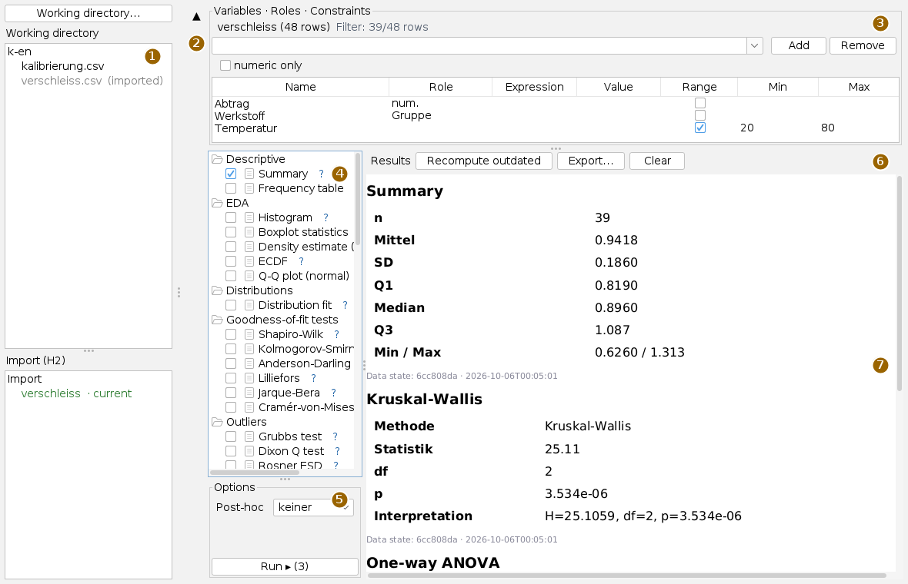
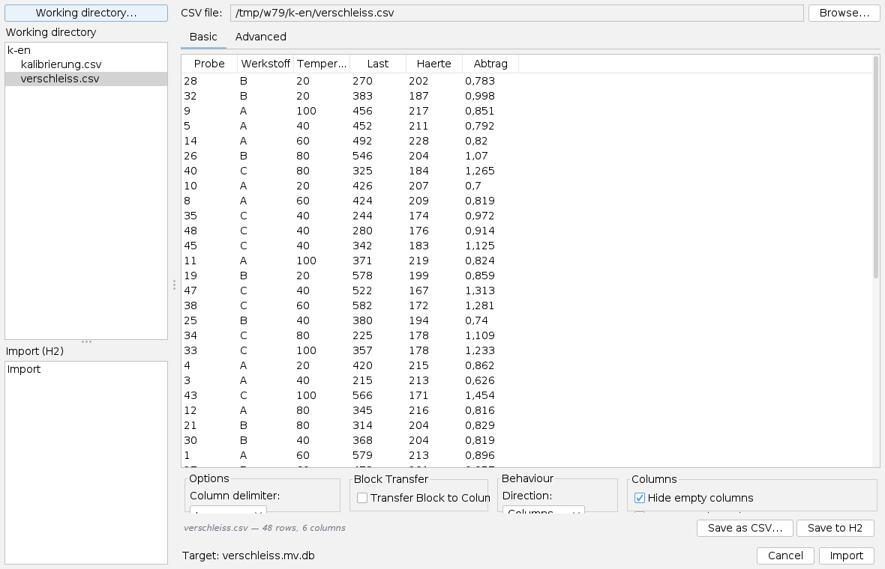
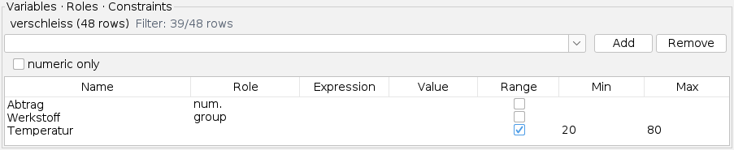
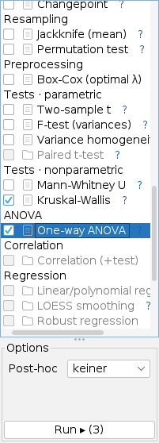
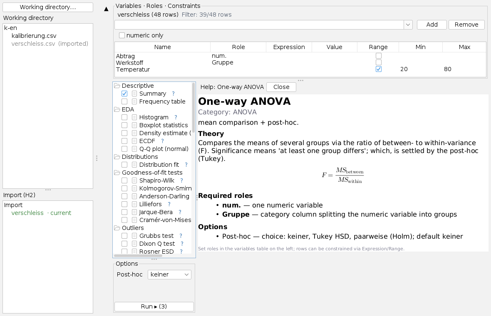
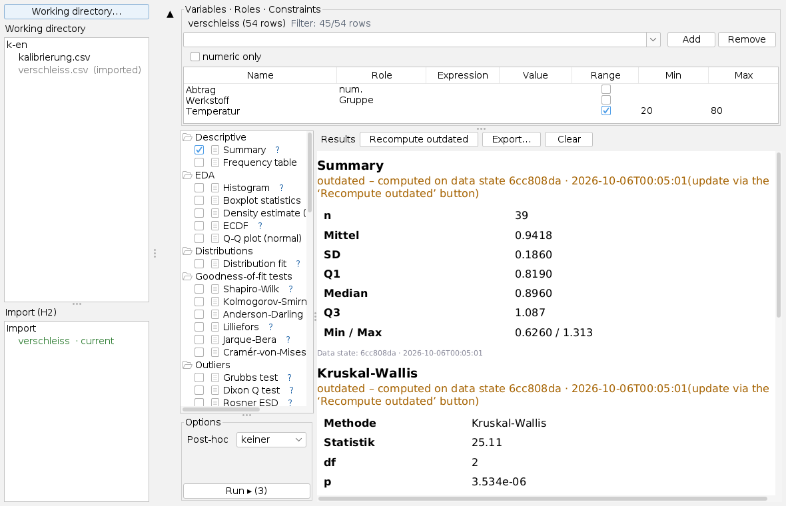

Using the statistics workbench
User page, as of 6 October 2026. How to choose a working directory, import a CSV file, give columns roles and constraints, select and run methods, and read, update and export the results. The pictures are screenshots of the app with an invented wear measurement series.
Some pictures were taken before the English interface was complete and may still show German labels.
The window
Open the app from the Apps menu with Statistics workbench or with Alt+S.

All dividers can be moved. The statistics part – method tree, options and Run – stays disabled until a data set is loaded and a role takes effect; group only takes effect together with num.
An evaluation in six steps
- Press Working directory… on the left and choose a folder. Its CSV files appear at the top, the data sets already imported below.
- Click a CSV file. If it has not been imported yet, the load panel appears on the right; check the delimiter and press Import.
- In the variables area add the columns you need and give them a Role, for example num. for the measured quantity and group for the grouping.
- Restrict rows if needed, for example to a temperature range.
- Tick methods in the method tree; a method you click shows its options.
- Press Run ▸. Each method adds a card to the result list.
Working directory and import

The app does not compute on the CSV itself; it imports it once into an H2 database file next to it: verschleiss.csv becomes verschleiss.mv.db. Each run fetches only the columns and rows it needs, so large files stay usable.
The load panel splits columns by comma at first. With a semicolon file the whole line ends up in one column and the panel reports that rows have more fields than the first; then set Column delimiter under Options to ;. A decimal comma becomes a point on import, in purely numeric columns only; dates and version numbers stay text. Import becomes available as soon as the preview has rows; Cancel goes back without importing. The import runs in the background with a busy notice.
An imported CSV is shown in grey at the top with (imported); clicking it loads the data set directly, without the load panel. Below, each data set carries a mark:
| Mark | Meaning |
|---|---|
| current (green) | The CSV is unchanged since the import (same checksum). |
| outdated – re-import (orange) | The CSV has changed. Click the CSV at the top and import it again. |
| no source | The CSV is missing; the data set can still be loaded. |
| external | A database without a record of where it came from. |
H2 files of other apps in the same folder are not shown.
Roles and constraints

At the top are the data set name with its row count and the filter state. A column is added to the table by choosing or typing it in the selection field and pressing Add; numeric only limits the choice to numeric columns. Remove takes out the selected row together with its role and constraint.
| Role | Meaning |
|---|---|
| num. | The numeric measured quantity. One column at a time. |
| group | The grouping of the measured quantity, may be a text column. One only. |
| x, y | The two quantities for correlation and regression. One each. |
| Multi | Several numeric columns for multivariate methods; effective from two columns. |
Assigning a role other than Multi a second time takes it away from the previous column. A text column accepts only group. Every change re-checks at once which methods are possible.
Constraints filter rows; the filtering runs in the database. Either an Expression (=, >, >=, <, <=) with a Value, or tick Range and enter Min and Max; one of the two is enough. For text columns, = with A,B selects several values. Several constraints apply together. A column can carry a constraint without a role, like the temperature here. A number that cannot be read drops the condition.
The ▲ button on the left collapses the variables area and gives the space to methods and results; ▼ expands it again.
Choosing and running methods

The tree groups the method catalogue by category: descriptive, exploratory, distributions, goodness-of-fit tests, outliers, confidence intervals, tests, process control, time series, resampling, preprocessing, ANOVA, correlation, regression, multivariate and categorical. Methods whose roles are not assigned are grey.
A click on the box in front of a method ticks it; grey ones cannot be ticked. A click on the name selects it and shows its settings under Options: lists, check boxes and number fields. The app remembers the settings per method, also when you switch to another one.
Run ▸ (n) computes all ticked methods one after another with their remembered options; if none is ticked, it computes the selected one. The computation runs in the background with a busy notice. If a method fails, the error is shown in red in its card and the others carry on.
The role check checks the shape, not the suitability. If a method is available, the required columns are there – whether the method fits the data is a different question. And the p-value stands next to the effect size, not in its place.
Help for a method

The blue ? at the end of a row shows the help for that method in place of the result list, also for grey methods: category, purpose, theory with formulas, required roles and options with their defaults. Close or a click on another method returns to the result list. If a method name is wider than the tree, the ? lies outside the visible area; drag the tree wider.
Results

Each card has the method as its heading, the result as a table and at the bottom the Data state: a short checksum and the import time. If the CSV changes and is imported again, each older card shows outdated – computed on data state … in orange. Recompute outdated recomputes all those cards with their remembered options and the current roles and constraints.
Export… writes all cards to one HTML file (suggested name <data set>-results.html), with the export time and a note whether constraints were active. Clear deletes the cards of the current data set.
What is saved
Roles, constraints and result cards are kept per data set while the app is open: switching between data sets, you find each in its last state. They are lost on closing; what remains are the H2 files next to the CSV files and exported results. The file chooser suggests the last directory next time.
Keyboard and mouse
Alt+S opens the app. In the method tree a press on the box ticks, a press on the ? opens the help, a press on the name selects the method. In the variables table a click in Role or Expression opens the list. The app has no other shortcuts.
Limits
- Overlays of results (curves, marks) appear as a note under the card, not as a chart.
- There is no editor for contingency tables, so the tests on categorical tables cannot be used yet.
- Each role takes one column (except Multi); several measured quantities are evaluated one after another.
- The load panel does not guess the delimiter.
What the app can do and what it builds on is described in the overview; the methods themselves in stats.